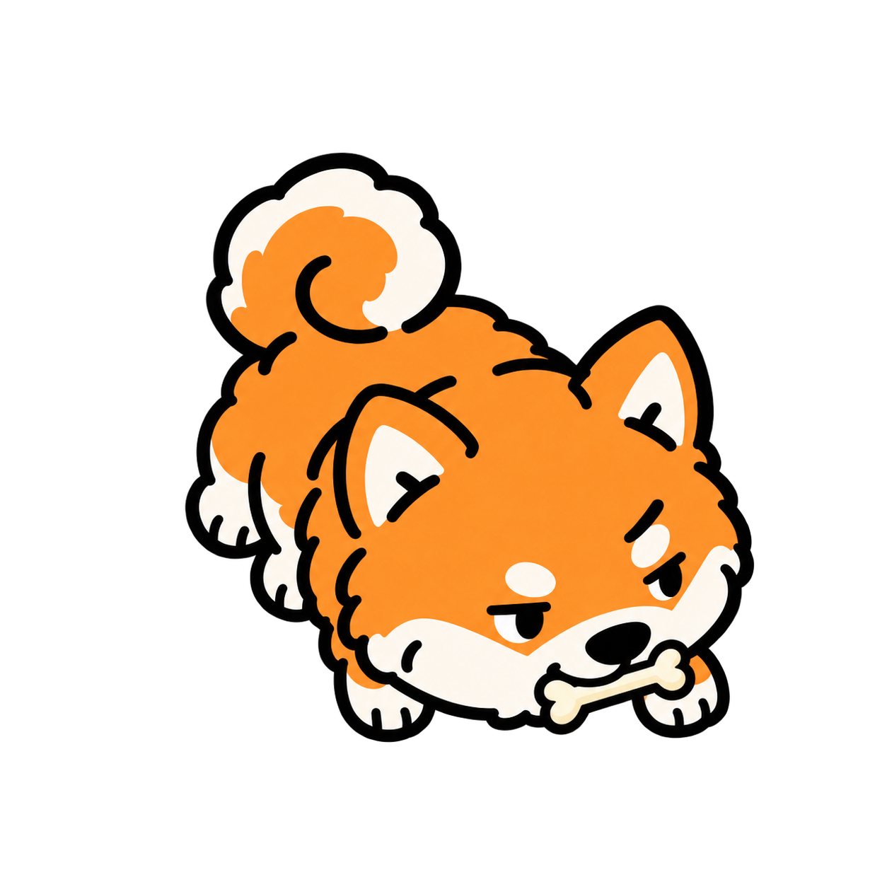
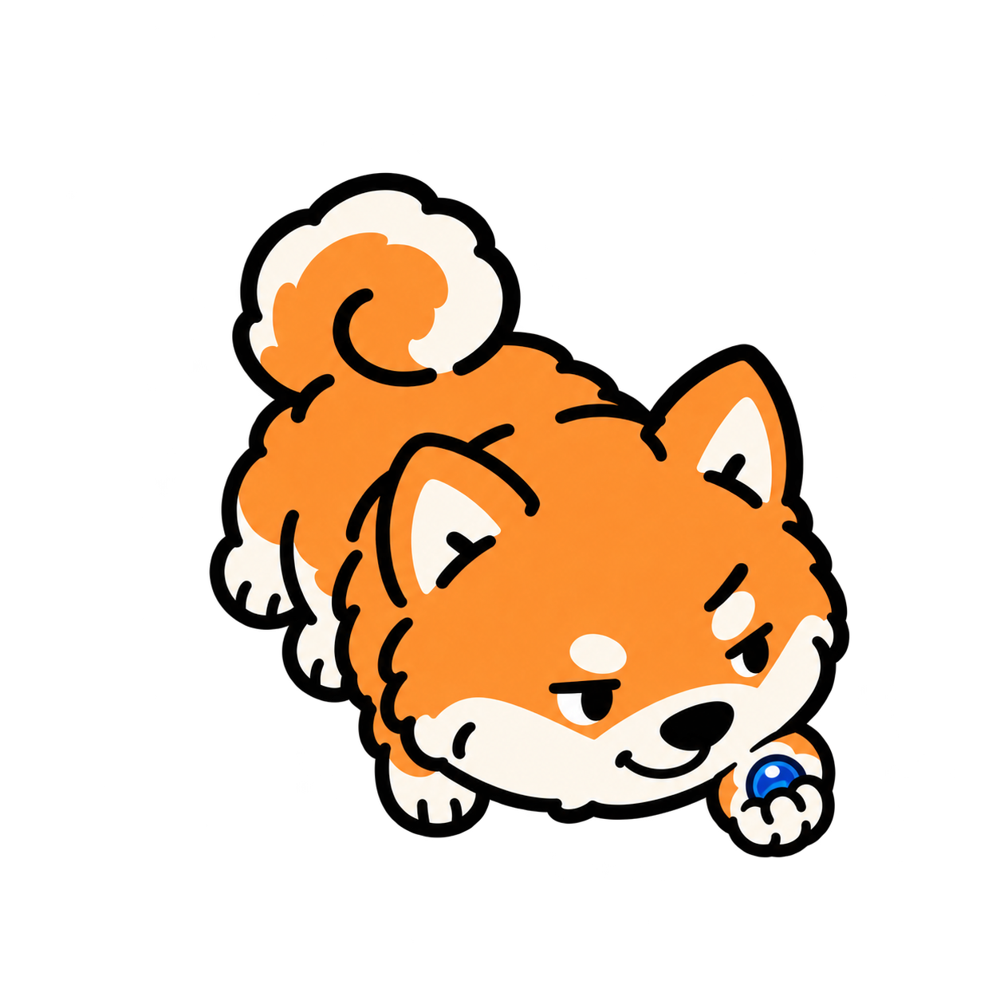
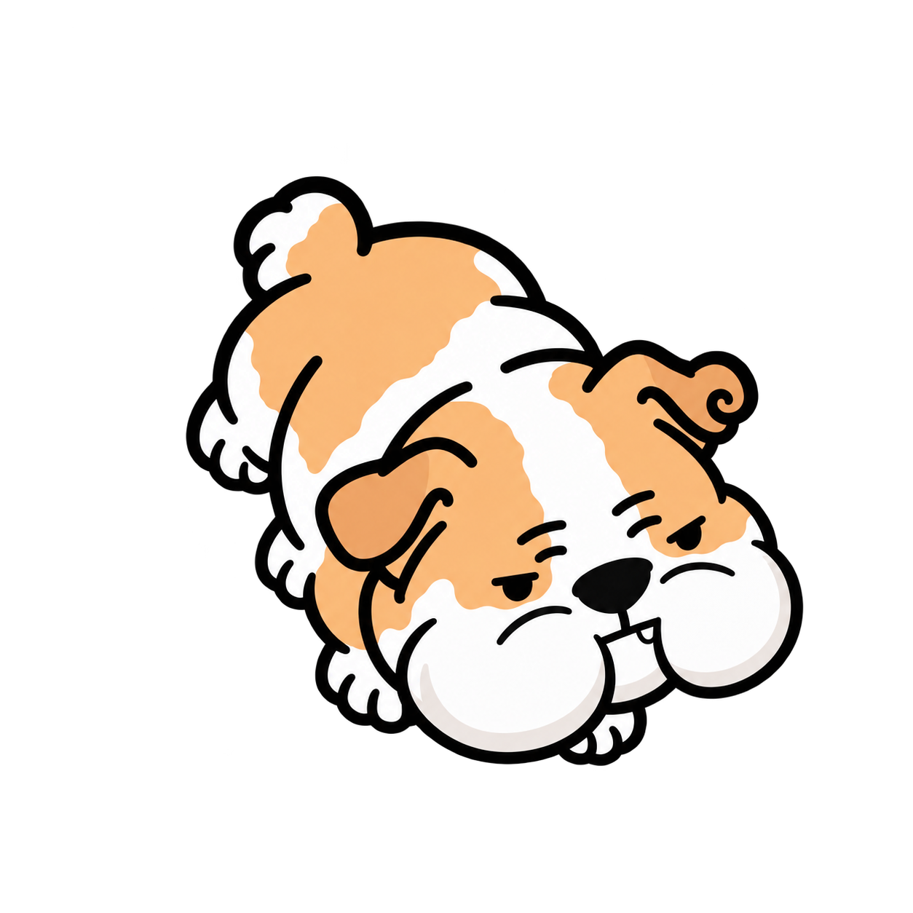
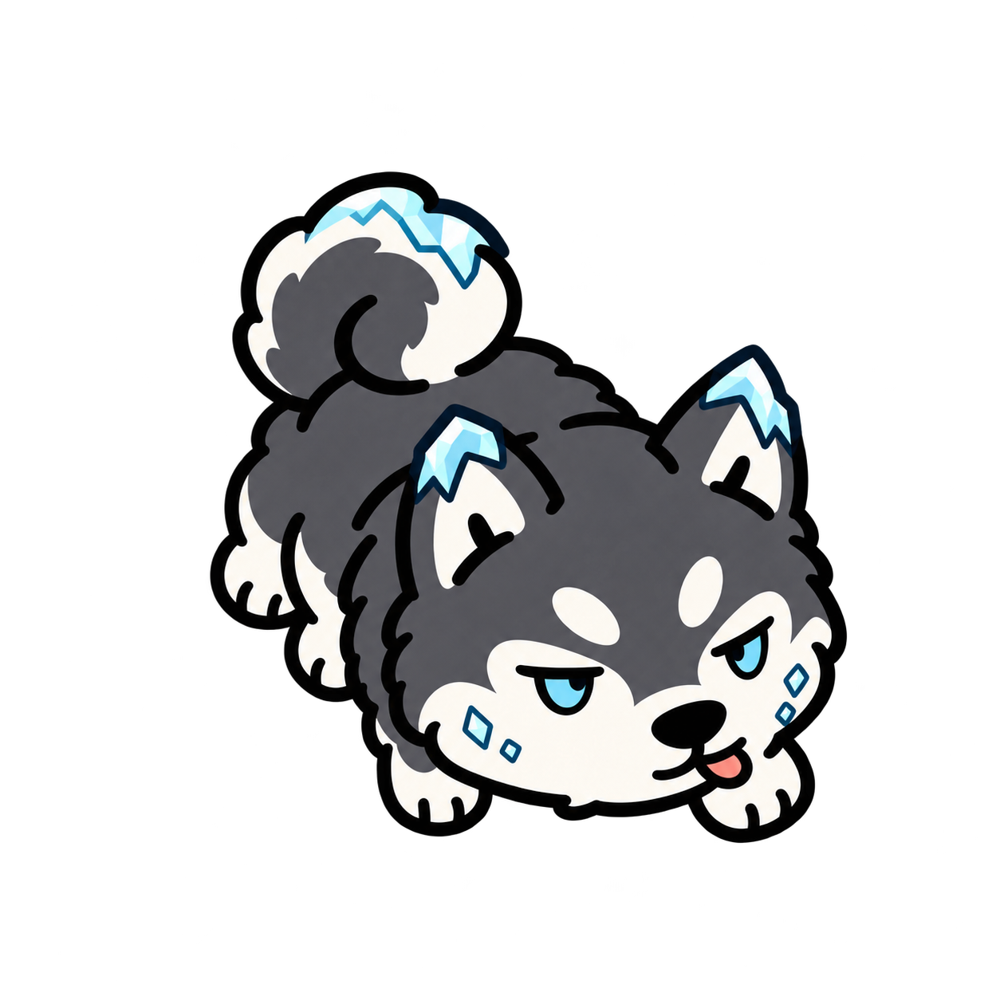
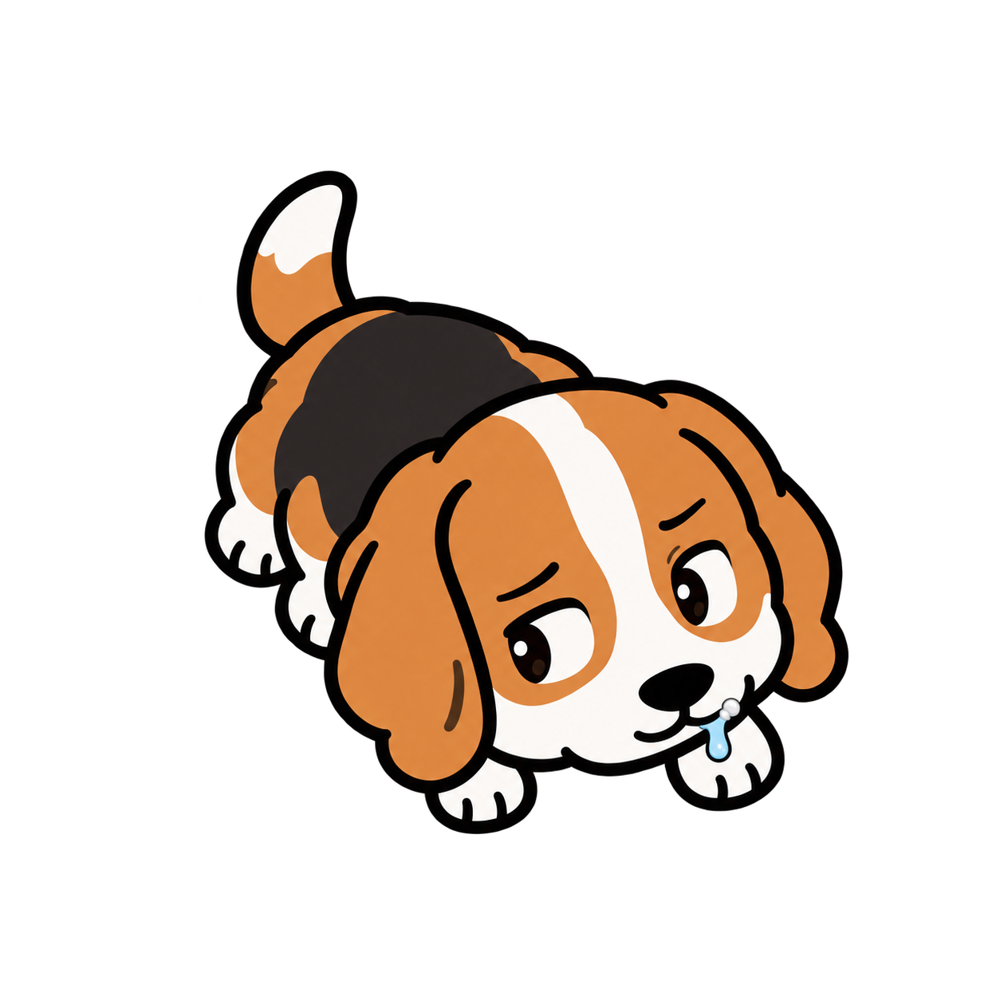
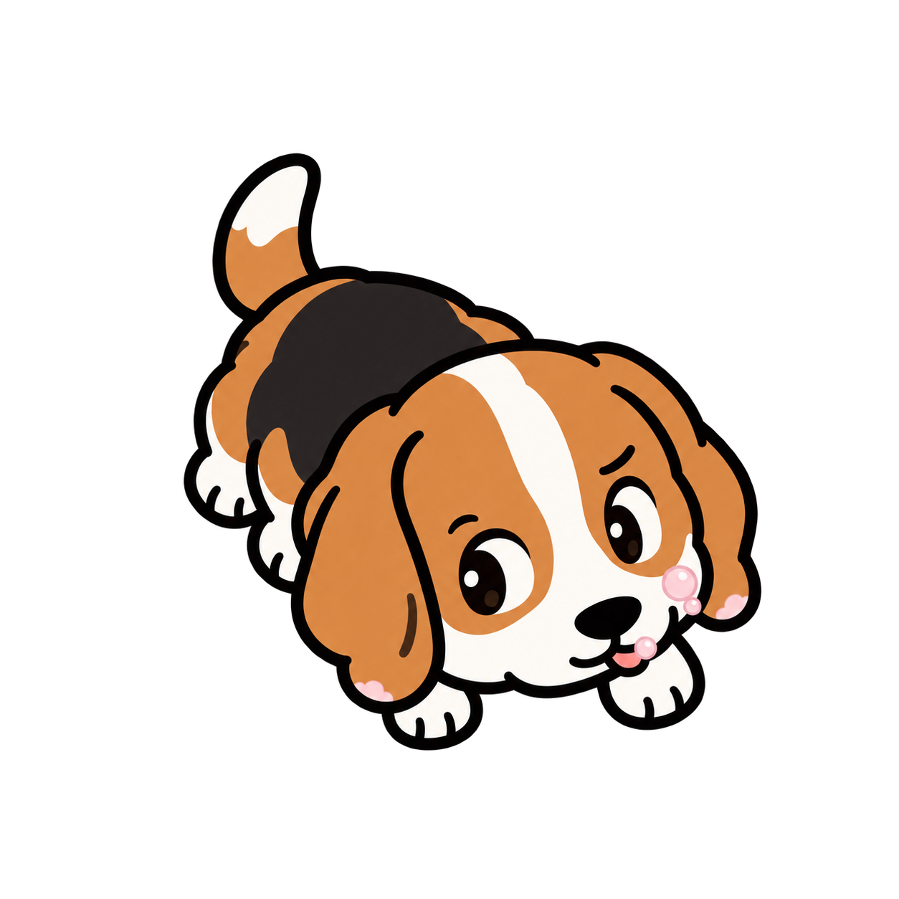
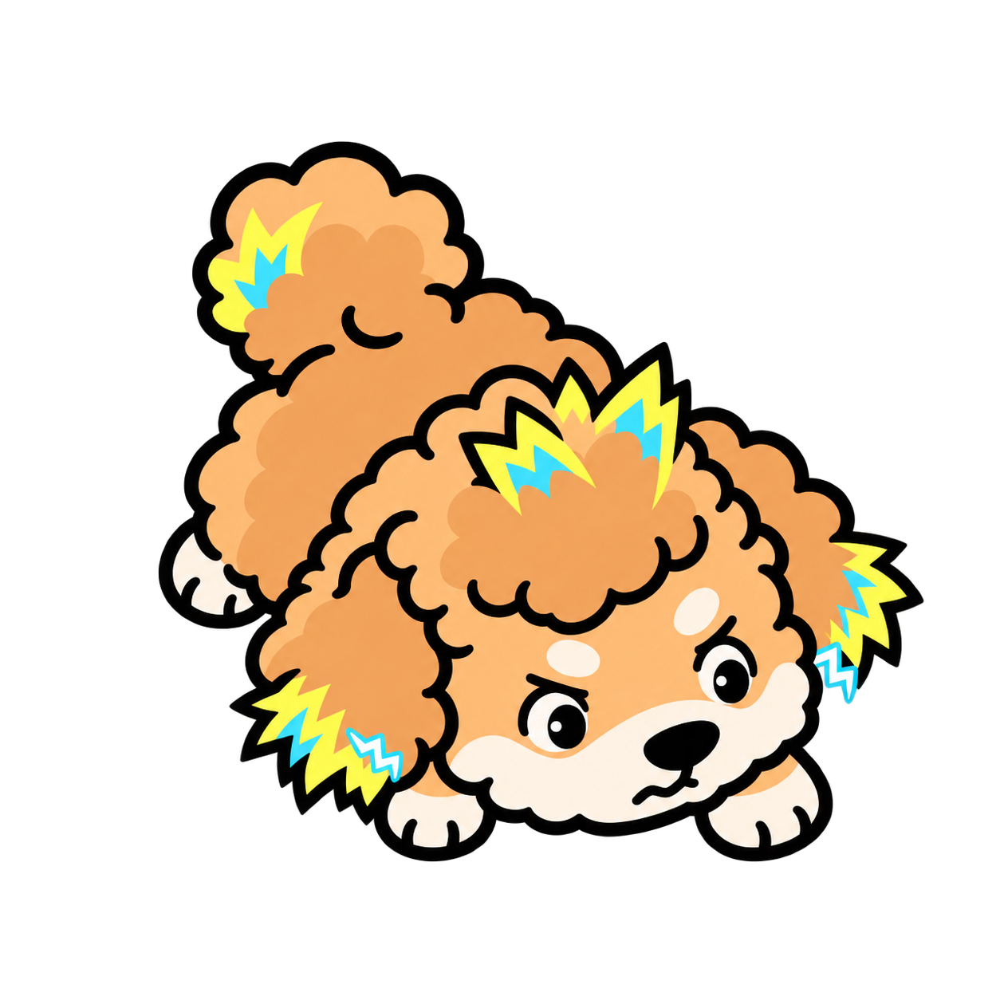
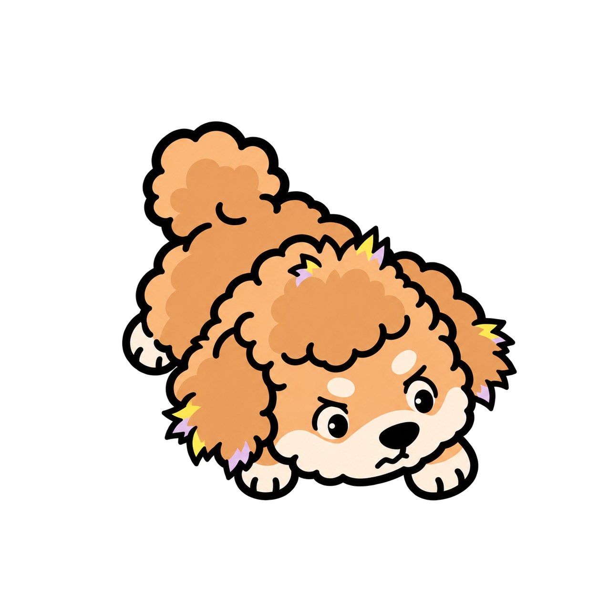
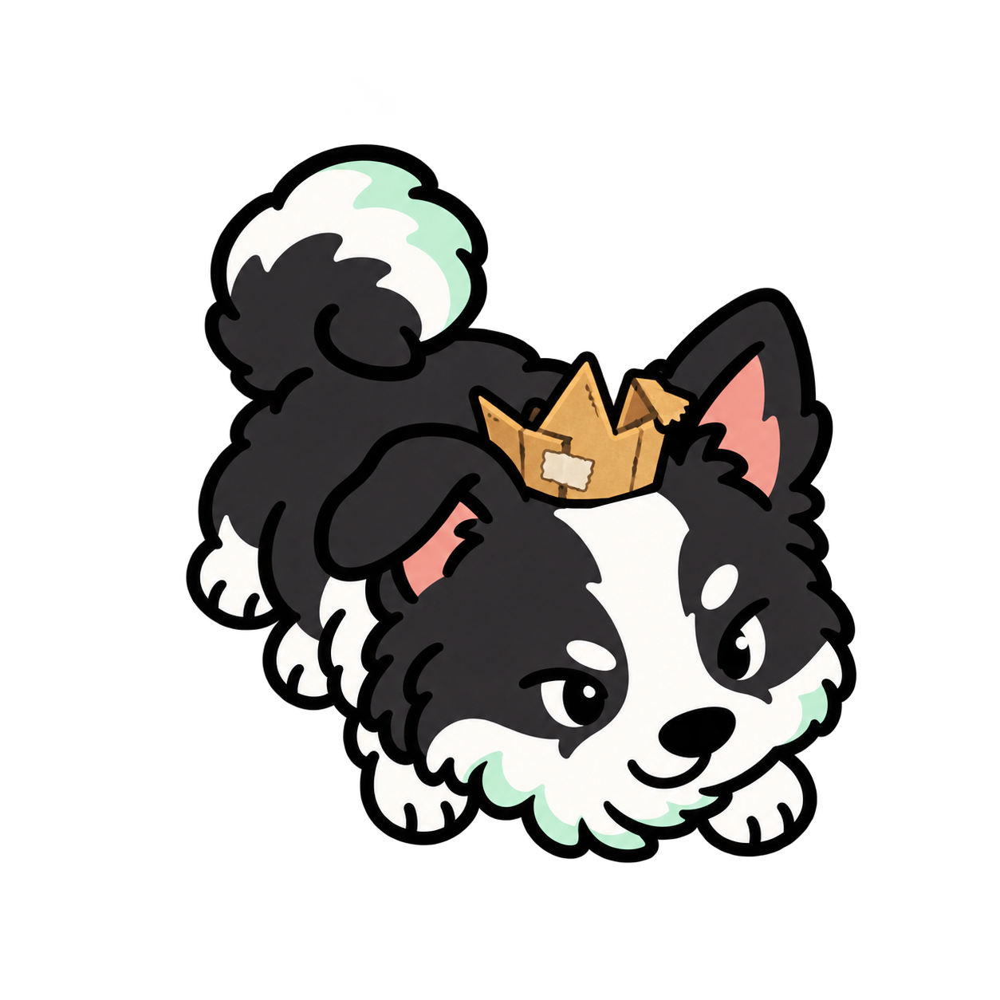
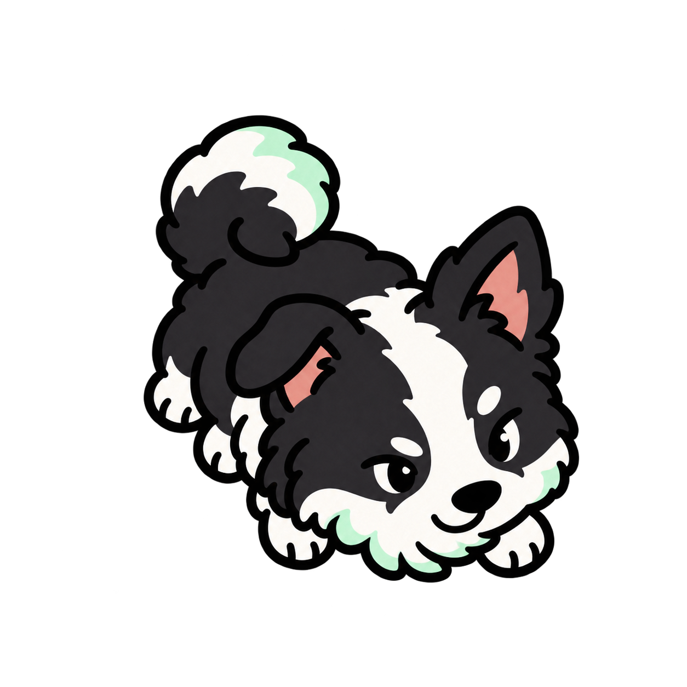

시바견
PNG ↓
뼈다귀 사고뭉치
능청스러운 눈썹과 비대칭 미소. 작은 뼈다귀를 입에 물고 공격을 준비해요.
입 · 뼈 발사체
뼈다귀 뱉기
작은 뼈를 입에 물고 힘을 모았다가, 입으로 퉤! 하고 뱉어요.
이전 모습과 비교

PUPSTERS / CHARACTER & ATTACK 05
왕관 쓴 대장, 침 흘리는 비글, 찌릿한 푸들.
성격과 능력이 겉모습에서도 보여요.

능청스러운 눈썹과 비대칭 미소. 작은 뼈다귀를 입에 물고 공격을 준비해요.
작은 뼈를 입에 물고 힘을 모았다가, 입으로 퉤! 하고 뱉어요.


공기를 가득 머금은 양 볼, 삐죽한 작은 이빨, 바람처럼 말린 귀끝.
양 볼에 공기를 가득 모았다가 입으로 공기 충격탄을 뿜어요.


귀끝과 꼬리 끝에 붙은 얼음 결정. 차가운 눈빛과 볼의 서리 조각.
숨을 들이마신 뒤 입에서 차가운 냉기를 길게 내뿜어요.


능청스러운 옆눈질과 입꼬리의 짧은 침방울. 작은 흰 침거품이 입가에 붙었어요.


정수리·귀끝·꼬리에 노랑과 하늘색 번개 털. 귀끝의 작은 스파크가 찌릿!
번개처럼 선 털에 전기를 모은 뒤, 정수리와 귀끝에서 찌릿한 전기를 방출해요.


접히고 찢어진 종이 왕관에 테이프까지. 삐딱하게 왕관을 쓰고 의기양양하게 웃어요.
힘차게 짖어 파동을 보내고 주변 아군을 강화해요. 직접 공격보다 지원 역할이에요.
